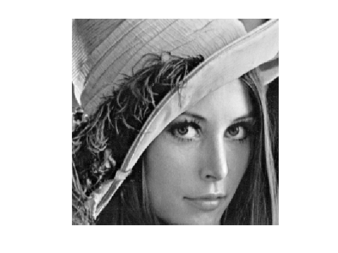
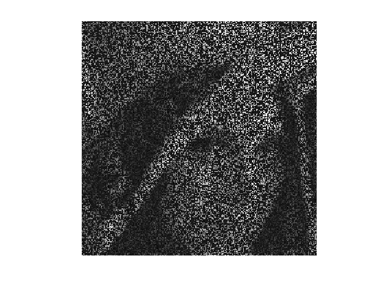
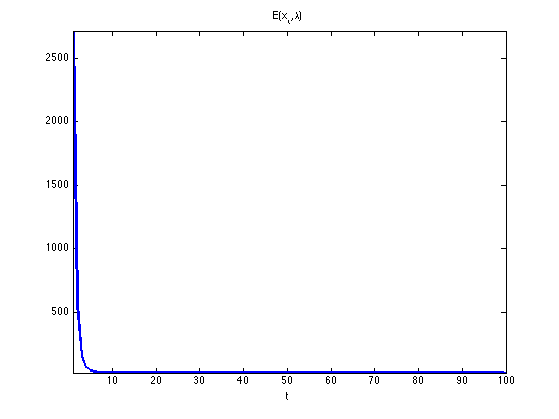
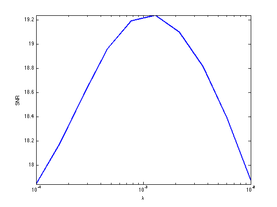
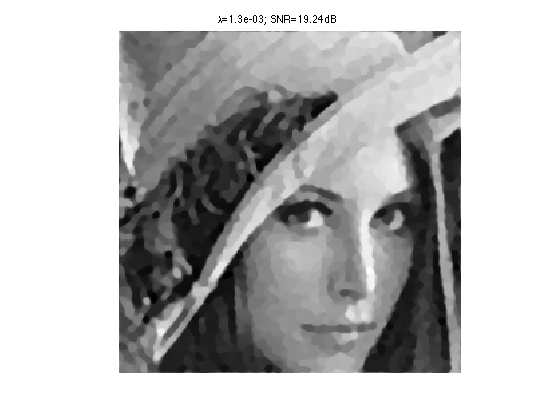

Generalized Forward-Backward Proximal Splitting
This tour explores the use of an advanced non-smooth optimization scheme to handle composite inverse problems resolution.
Contents
This tour is written by Hugo Raguet.
We use a proximal splitting algorithm detailed in
Hugo Raguet, Jalal M. Fadili and Gabriel Peyre, Generalized Forward-Backward Splitting Algorithm, preprint arXiv:1108.4404v2, 2011.
Installing toolboxes and setting up the path.
You need to download the following files: signal toolbox and general toolbox.
You need to unzip these toolboxes in your working directory, so that you have toolbox_signal and toolbox_general in your directory.
For Scilab user: you must replace the Matlab comment '%' by its Scilab counterpart '//'.
Recommandation: You should create a text file named for instance numericaltour.sce (in Scilab) or numericaltour.m (in Matlab) to write all the Scilab/Matlab command you want to execute. Then, simply run exec('numericaltour.sce'); (in Scilab) or numericaltour; (in Matlab) to run the commands.
Execute this line only if you are using Matlab.
getd = @(p)path(p,path); % scilab users must *not* execute this
Then you can add the toolboxes to the path.
getd('toolbox_signal/'); getd('toolbox_general/');
Convex Optimization with Generalized Forward-Backward Splitting
We consider general optimization problems of the form \[ \umin{x} F(x) + \sum_{i=1}^n G_i(x) \] where \(F\) is a convex, differentiable function, with Lipschitz-continuous gradient and the \(G_i\)'s are convex functions
To use proximal algorithm, one should be able to compute the proximity operator of the \(G_i\)'s, defined as: \[ \text{prox}_{\gamma G_i}(x) = \uargmin{y} \frac{1}{2} \norm{x-y}^2 + \gamma G_i(y). \]
The algorithm reads: \[ \text{for all } i, \quad z_{i,t+1} = z_{i,t} + \text{prox}_{n \gamma G_i}( 2 x_t - z_{i,t} - \gamma \nabla F(x_t) ) - x_t\] \[ x_{t+1} = \frac{1}{n} \sum_{i=1}^n z_{i,t+1}. \]
It can be shown that if \(0 < \gamma < 2 \beta\) where \(\frac{1}{\beta}\) is a Lipschitz constant of \(\nabla F\), then \({(x_t)}_t\) converges to a minimizer of \(F + \sum_{i=1}^n G_i\).
Joint Inpainting and Deblurring
We consider a linear imaging operator \(\Phi : f \mapsto \Phi(f)\) that maps high resolution images to low dimensional observations. Here we consider a composition of a pixel masking operator \(M\) and of a blurring operator \(K\).
Load an image \(f_0\).
name = 'lena';
N = 256;
f0 = load_image(name);
f0 = rescale(crop(f0,N));
Display it.
clf imageplot(f0);
First, we define the masking operator. It is a projector on the set of valid pixels. It is equivalently implemented as a diagonal operator that multiplies the image by a binary mask
rho_M = .7; mask = rand(N,N) > rho_M; M = @(f) mask.*f;
Then, we define the blurring operator \(K\), which is is a convolution with a kernel \(k\): \(K(f) = k \star f\).
We load a gaussian kernel \(k\) of variance \(\si_K=2\). Note that the Young's inequality gives for any \(f\) \[ \norm{f \star k}_2 \leq \norm{f}_2 \norm{k}_1 \] We normalize \(k\) so that \(\norm{k}_1=1\) which ensures \(\norm{K}=1\).
sig_K = 2; [X,Y] = meshgrid( [0:N/2-1 -N/2:-1] ); k = exp( - (X.^2+Y.^2) / (2*sig_K^2) ); k = k./sum(abs(k(:)));
A convolution is equivalent to a multiplication in the Fourier domain. \[ \Ff(f \star k) = \Ff(f) \cdot \Ff(k), \quad\text{so that}\quad K(f) = \Ff^{-1}(\Ff(f) \cdot \Ff(k)) \] where \(\Ff\) is the 2-D Fourier transform.
We thus implement \(K\) using the Fourier transform of the kernel.
Fk = fft2(k); K = @(f) real( ifft2( fft2(f).*Fk ) );
The masking and blurring operator \( \Phi = M \circ K \).
Phi = @(f)M(K(f));
Compute the observations \( y = \Phi f_0 + w \), where \(w\) is a Gaussian white noise of variance \(\si_w\).
sig_w = .025; y = Phi(f0) + sig_w*randn(N,N);
Display it.
clf imageplot(y);
Splitting Total Variation Regularization
We want to solve the noisy inverse problem \( y = \Phi x + w\) using a total variation regularization: \[ \umin{x} \frac{1}{2} \norm{y - \Phi x}^2 + \la \norm{x}_{\text{TV}}. \]
The total variation pseudo-norm is defined as the sum over all pixels \( p=(p_1,p_2) \) of the norm of the image gradient \(\text{grad}(x)_p\) at \(p\).
The gradient is computed using finite differences \[ \text{grad} \, : \, \choice{ \mathbb{R}^{N \times N} \rightarrow \mathbb{R}^{N \times N \times 2} \\ x \mapsto ( x \star h_1, x \star h_2 ), } \] where \(h_1\) and \(h_2\) are two 2-D filters.
One usually computes the gradient using finite differences along vertical and horizontal directions. This corresponds to convolutions \( \text{grad}(x) = (x \star h_1,x \star h_2) \in \RR^{N \times N \times 2} \) where \[ h_1 = \begin{pmatrix} 0 & 0 & 0 \\ 0 & -1 & 0 \\ 0 & 1 & 0 \end{pmatrix} \qandq h_2 = \begin{pmatrix} 0 & 0 & 0 \\ 0 & -1 & 1 \\ 0 & 0 & 0 \end{pmatrix}. \] Note that we write 2-D filters as \(3 \times 3\) matrices, which implicitely assumes that the central index (position 0) is at the center of this matrix.
Following the method introduced in:
P. L. Combettes and J.-C. Pesquet, A proximal decomposition method for solving convex variational inverse problems, Inverse Problems, vol. 24, no. 6, article ID 065014, 27 pp., December 2008.
we use diagonal filters: \[ h_1 = \begin{pmatrix} 0 & 0 & 0 \\ 0 & -1 & 0 \\ 0 & 0 & 1 \end{pmatrix} \qandq h_2 = \begin{pmatrix} 0 & 0 & 0 \\ 0 & 0 & 1 \\ 0 &-1 & 0 \end{pmatrix} \] is more interesting for us, since those kernels are orthogonals: they do not overlap. We will use these diagonal filters to split the total variation into simpler functions.
The TV norm can be written as the \(\ell_1-\ell_2\) norm \(G(u)\) of the gradient \( u=\text{grad}(x) \) \[ \norm{x}_{\text{TV}} = G( \text{grad}(x) ) \qwhereq G(u) = \sum_{p} \norm{u_p} = \sum_p \sqrt{ {u_{1,p}}^2 + {u_{2,p}}^2 } \] where \(u = ( (u_{1,p},u_{2,p}) )_{p} \in \RR^{N \times N \times 2} \) is a vector field.
The proximal operator of \(G\) is the soft thresholding of the norm of each vector \( u_p \in \RR^2 \) in the vector field, which corresponds to \[ \text{prox}_{\gamma G}(u)_{p} = \max\pa{0, 1-\frac{\gamma}{\norm{u_{p}}}} u_{p} . \] If the norm of \(u_{p}\) is lower than \(\gamma\), then \(u_p\) is set to zero; otherwise, both coordinates of \(u_p\) are shrinked by the same factor.
We define the proximity operator of \(G\).
G = @(u) sqrt( sum( u.^2, 3 ) ); proxG = @(u,gamma) repmat( max(0,1 - gamma./G(u) ), [1 1 2] ).*u;
We would like to compute the proximity operator of \( \norm{\cdot}_{\text{TV}} = G \circ \text{grad} \). This is much more complicated than computing the proximity operator of \(G\) because the linear operator \(\text{grad}\) introduces dependancies between pixels.
Denoting \( u=\text{grad}(x)=(u_{1,p},u_{2,p})_{p=(p_1,p_2)} \) the gradient vector, we note that we can split the TV pseudo norm according to the parity of \(p_1=2r_1+s_1\) and \(p_2=2r_2+s_2\) (which corresponds to \(s_i\) being either 0 or 1) \[ \norm{x}_{\text{TV}} = \sum_{s_1,s_2=0,1} \sum_{(r_1,r_2)} \sqrt{ {u_{1,2 r_1+s_1,2r_2+s_2}}^2 + {u_{2,2 r_1+s_1,2r_2+s_2}}^2 }. \]
This can be re-written more compactly as a split of the TV pseudo-norm using using \(n=4\) simple functions \( (G_i)_{i=1}^4 \): \[ \norm{x}_{\text{TV}} = \sum_{i=1}^{4} G_i(x) \qwhereq \choice{ G_i = G \circ L_i, \\ L_i = S \circ \text{grad} \circ T_{s^{(i)}} } \] where \(T_s\) is the shifting operator that translates the pixels by \(s=(s_1,s_2)\) (with periodic boundary condition, i.e. modulo \(N\)) \[ T_s(x)_p = x_{p_1-s_1 \text{ mod } N, p_2-s_2 \text{ mod } N} \] and \(S : \RR^{N \times N} \rightarrow \RR^{N/2 \times N/2}\) is the sub-sampling operator of a vector field by a factor of two along vertical and horizontal directions \[ S(u)_{p_1,p_2} = u_{2p_1,2p_2}. \] The four shifts are \[ s \in \{ (0,0), (1,0), (0,1), (1,1) \} . \]
We create the subsampled gradient operator \(L_1 = S \circ \text{grad}\) (shift \(s =(0,0)\)).
L = @(x) cat( 3, x(2:2:end,2:2:end)-x(1:2:end,1:2:end), x(1:2:end,2:2:end)-x(2:2:end,1:2:end) );
We create the four shifted version \(L_1,L_2,L_3,L_4\) and store them using a cell array, so that Li{i} implements \(L_i\).
LShift = @(x,s) L( circshift(x,s) );
Li = {@(x)LShift(x,[0,0]), @(x)LShift(x,[1,0]), @(x)LShift(x,[0,1]), @(x)LShift(x,[1,1]) };
Define the four functionals \( (G_i)_{i=1}^4 \).
for i=1:4 Gi{i} = @(x) sum( sum( G( Li{i}(x) ) ) ); end
Since \(L_1 = S \circ \text{grad} \) its ajoint reads \(L_1^* = \text{grad}^* \circ U\) where \(U\) is the upsampling operator \[ U(v)_{2p_1+s_1,2p_2+s_2} = \choice{ v_{p_1,p_2} \qifq s_1=s_2=0, \\ 0 \quad \text{otherwise}. } \]
U = @(x)upsampling( upsampling( x, 1, 2 ), 2, 2 );
The adjoint of the gradient \( \text{grad}^* =-\text{div}\) \[ \text{grad}^*(u) = u_1 \star \bar h_1 + u_2 \star \bar h_2 \in \RR^{N \times N} \] is obtained using the reversed filters \[ \bar h_1 = \begin{pmatrix} 1 & 0 & 0 \\ 0 & -1 & 0 \\ 0 & 0 & 0 \end{pmatrix} \qandq \bar h_2 = \begin{pmatrix} 0 &-1 & 0 \\ 1 & 0 & 0 \\ 0 & 0 & 0 \end{pmatrix} \]
revIdx = [N 1:N-1]; gradS = @(u)(u(revIdx,revIdx,1) - u(:,:,1)) + (u(:,revIdx,2) - u(revIdx,:,2));
Define the adjoint operators of \(L_1\).
L1S = @(v)gradS(U(v));
Define the adjoint \(L_{i}^*\) of \(L_{i}\). Since \(L_i = L_1 \circ T_{s_i}\), one has \(L_i^* = T_{s_i}^* \circ L_i^* = T_{-s_i} \circ L_i^*\).
LShiftS = @(gx,s) circshift( L1S( gx ), -s );
LiS = { @(x)LShiftS(x,[0,0]), @(x)LShiftS(x,[1,0]), @(x)LShiftS(x,[0,1]), @(x)LShiftS(x,[1,1]) };
Computing the finite differences with above mentioned orthogonal kernels implies the crucial property that the four operators \[ L_i : \mathbb{R}^{N \times N} \mapsto \mathbb{R}^{\frac{N}{2} \times \frac{N}{2} \times 2} \] are tight frames, i.e. satisfy \[ L_i \circ L_i^* = b \, \text{Id} \] for some \(b \in \RR\).
Exercice 1: (check the solution) Check that each subsampled gradient \(L_i\) is indeed a tight frame, and determine the value of \(b\). You can for instance apply the operators to random vector fields.
exo1;
We are now ready to compute the proximity operators of each \( G_i \). Recall that rules of proximal calculus gives us that if \(L \circ L^* = b \, \text{Id} \), then \[ \text{prox}_{G \circ L} = \text{Id} + \frac{1}{b} L^* \circ \left( \text{prox}_{b G} - \text{Id} \right) \circ L \]
Create the proximity operator of \( G_i \).
proxG_Id = @(u,gamma)proxG(u,gamma) - u;
proxGi = @(x,gamma,i)x + (1/b)*LiS{i}( proxG_Id( Li{i}(x), b*gamma ) );
Using Smoothness of Data-Fidelity
We rewrite the initial optimization problem as \[ \umin{x} E(x,\la) = F(x) + \la \sum_{i=1}^4 G_i(x) \] where the data-fidelity term is \[ F(x) = \frac{1}{2} \norm{y - \Phi x}^2 . \]
F = @(x) (1/2)*sum( sum( (Phi(x) - y).^2 ) );
E = @(x,lambda) F(x) + lambda * ( Gi{1}(x) + Gi{2}(x) + Gi{3}(x) + Gi{4}(x) );
Computing the proximity operator of \(F\) requires the resolution of a linear system. To avoid such a time-consuming task, the GFB makes use of the smoothness of \(F\). Its gradient is \[ \nabla F(x) = \Phi^* (\Phi(x) - y). \]
Important: be careful not to confuse \(\text{grad}(x)\) (the gradient of the image) with \(\nabla F\) (the gradient of the functional).
We define the adjoint operator \( \Phi^* \) of \(\Phi\). One has \(\Phi^* = K^* \circ M^* = K \circ M\) since \( M^* = M \) because it is an orthogonal projector and \( K^* = K \) because it is a convolution with a symetric kernel.
Phis = @(f)K(M(f));
Create the gradient operator \( \nabla F \).
nablaF = @(x)Phis( Phi(x) - y );
Moreover, \( \nabla F \) is affine, so that it is Lipschitz-continuous with Lipschitz constant equal to the norm of its linear part \[ \frac{1}{\beta} = \norm{\Phi^* \circ \Phi} \leq \norm{M} \times \norm{K} = 1, \] since \( \norm{M} = 1 \) because it is a projector and \( \norm{K} = 1 \) because it is a convolution with a normalized kernel. Hence in the following we define \(\be = 1\).
beta = 1;
Solving with Generalized Forward-Backward
We are now ready to minimize the functional \(E(x,\la)\).
Set the number of parts \(n\) in the non-smooth splitting
n = 4;
Define the GFB step size \(\gamma\) that should satisfy \(0 < \gamma < 2 \be\).
gamma = 1.8*beta;
Choose a regularization parameter \( \la>0 \).
lambda = 1e-4;
Exercice 2: (check the solution) The parameter \( \la \) does not appear explicitely in the iterations of the generalized forward-backward algorithm. Where does it step in ?
exo2;
The iterates \(x_t\) of the GFB will be stored in a variable x that we initialize to \(x_0=0\).
x = zeros(N,N);
The auxiliary variables \(z_{i,t}\) will be stored in a \(N \times N \times n\) array z initialized to 0, so that z(:,:,i) stores \(z_{i,t}\).
z = zeros(N,N,n);
Exercice 3: (check the solution) Compute 100 iterations of the generalized forward-backward, while monitoring the value \(E(x_t,\la)\) of the objective at iteration \(t\). Display the evolution of the objective along iterations: it must decrease.
exo3;
Now that we know how to minimize our functional, we must seek for the most relevent regularization parameter \( \la \). Because we know the original image \( f_0 \), we can compare it to the recovered image \(x\) for different values of \(\la\). Use the signal-to-noise ratio (SNR) as criterium.
Define a range of acceptable values for \(\la\).
lambdaList = logspace( -4, -2, 10 );
Exercice 4: (check the solution) Display the resulting SNR as a function of \(\la\). Take the best regularization parameter and display the corresponding recovery.
exo4;
Display the final image, that has been saved in the variable recov.
clf
imageplot(recov)
title( sprintf( '\\lambda=%.1e; SNR=%.2fdB', bestLambda, SNRmax ) );
 Bonus: Composite Regularization
The degradation operator \(\Phi\) is very aggressive. To achieve better recovery, it is possible to mix several priors. Let us add a wavelet analysis sparsity prior in the objective \[ \umin{x} F(x) + \la \sum_{i=1}^4 G_i(x) + \mu G_5(x) \qwhereq G_5(x) = \norm{\Psi x}_1 \] where \(\Psi\) is an orthogonal wavelet transform and \(\norm{\cdot}_1\) is the \(\ell_1\)-norm.
The number \(n\) of simple functionals is now 5.
n = 5;
Create the wavelet transform \(\Psi\).
Jmin = 4; Psi = @(x)perform_wavortho_transf(x,Jmin,+1);
Define its adjoint \(\Psi^*\), where we use the fact that the adjoint of an othogonal operator is its inverse.
Psis = @(x)perform_wavortho_transf(x,Jmin,-1);
Similarly to the \(\ell_1-\ell_2\)-norm, the proximity operator of the \(\ell_1\)-norm is a soft-thresholding on each coefficients. Because \(\Psi\) is orthogonal, it is also a tight frame operator with bound \(b=1\).
Create the proximity operator of \( G_5 \).
l1norm = @(wx)abs(wx); proxl1 = @(wx,gamma) max(0,1 - gamma./l1norm(wx) ).*wx; proxG5 = @(x,gamma) Psis( proxl1(Psi(x),gamma) );
Exercice 5: (check the solution) Solve the composite regularization model. Keep the previous value of \(\la\), set \(\mu = 10^{-3}\), and perform 500 iterations. Display the results and compare visually to the previous one. Is the SNR significantly improved ? Conclude on the SNR as a quality criterium, and on the usefulness of mixing different regularizations priors.
exo5;